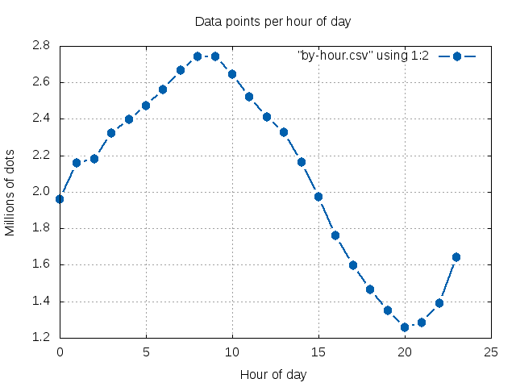

Poking 5 million GPS locations
Comments? @brunosanEdits? Github repo
Poking 50 million GPS locations
at the World Bank
Comments? @brunosanEdits? Github repo
Mapbox
1.- Drop the file on mapbox.com/editorCartoDB
1.- Drop the file on cartodb.comQGIS
1.- Add CSV layer. (2.- Add OpenLayers plugin for the map backdrop.)
... and many other options.
Map reducing
- Map: per-record questions
- Reduce: Aggregate the results of those questions.
E.g. Rides per day of week
#!/usr/bin/perl -w
use strict;
use DateTime::Format::Strptime;
my $parser = DateTime::Format::Strptime->new(pattern => '%Y-%m-%d %H:%M:%S');
my $format = DateTime::Format::Strptime->new(pattern => '%w' );
my %ocurr;
while (<>) {
my $data = (split /[;.]/,$_)[1];
my $t = $parser->parse_datetime($data);
my $field=$format->format_datetime($t);
#printf "$_ -> $data -> $t -> $field\n";
$ocurr{$field} = 0 if (not exists $ocurr{$field});
$ocurr{$field}++
}
foreach my $field (keys %ocurr) {
printf "$field $ocurr{$field}\n";
}
cat ~/wb-data/Holly/pre/locationupdate.csv | \
parallel --pipe --blocksize 128M --ungroup \
-j 200% ./map-dow.pl | ./reduce.pl
gnuplot plot-by-dow.gnu
5,000 dots/s/CPU
# 85319703;2013-09-18 16:16:00;:;;;;10;57;536097050895537;10.3002443313599;123.872734069824;;2013-09-18 16:16:26.331;;0101000020E6100000000000A0B9992440000000E0DAF75E40;;;2013-09-18 16:16:00;9;t
my @data = split /[;]/;
my $field = (split /[\s:]/,$data[-3])[1];
208,000 dots/s/CPU
Vizualizing the dots
Spatial binning via turj.js
// create 1/2 mi grid over Cebu lon,lat
var bbox = [ 123.83857727050781, 10.255465437158735,
123.98620605468751, 10.395636925175673 ];
var grid = turf.squareGrid(bbox, 0.1, 'miles');
grid.features.forEach(function(cell) {
// precompute bboxes
cell.bbox = turf.extent(cell);
cell.properties.total = 0;
});
[...]
csvStream.on('data', function (obj) {
pace.op();
// check for valid lat, lons
//console.log(JSON.stringify(obj));
if(obj['lat'] && obj['lon']) {
var pt = turf.point([parseFloat(obj['lon']), parseFloat(obj['lat'])]);
for(var i = 0; i < grid.features.length; i++) {
if(pt.geometry.coordinates[0] >= grid.features[i].bbox[0] &&
pt.geometry.coordinates[0] <= grid.features[i].bbox[2] &&
pt.geometry.coordinates[1] >= grid.features[i].bbox[1] &&
pt.geometry.coordinates[1] <= grid.features[i].bbox[3] &&
turf.inside(pt, grid.features[i])) {
//var dateParts = obj['adjustedtimestamp'].split(' ')[0].split(':');
//var month = dateParts[0]+'/'+dateParts[1];
var bin = parseDayHour(obj['adjustedtimestamp']);
bins[bin] = true;
if(!grid.features[i].properties[bin]) grid.features[i].properties[bin] = 0;
grid.features[i].properties[bin]++;
grid.features[i].properties.total++;
break;
}
}
}
});